Abstract
Graph neural networks (GNNs) leverage the connectivity and structure of real-world graphs to learn intricate relationships between nodes. Many real-world graphs exceed the memory capacity of a GPU, and training GNNs on them requires techniques such as mini-batch sampling to scale. The alternative — distributed full-graph training — suffers from high communication overheads and load imbalance due to the irregular structure of graphs.
We propose a three-dimensional (3D) parallel approach for full-graph training that tackles these issues and scales to billion-edge graphs. We introduce a double-permutation scheme for load balancing and a performance model to predict the optimal 3D configuration of our implementation, Plexus. Across six graph datasets, Plexus scales to up to 2048 GPUs of Perlmutter and 1024 GPUs of Frontier, achieving unprecedented speedups of 2.3–12.5× over prior state of the art and reducing time-to-solution by 5.2–8.7× on Perlmutter and 7.0–54.2× on Frontier.
Key Contributions
3D parallel full-graph GNN
An open-source framework that adapts Agarwal's 3D parallel matrix-multiply to full-graph GNN training, distributing every matrix across a 3D GPU grid and parallelizing all the matrix multiplications involved.
Performance model
A model that identifies the optimal arrangement of GPUs in the 3D virtual grid — no exhaustive search of configurations needed.
Load-balancing optimizations
A double-permutation scheme drives non-zero imbalance from 7.70 down to 1.001 (max/mean), plus blocked aggregation to cut performance variability and dense-GEMM tuning to scale on Frontier.
Record-scale results
Scales to 1024 GPUs on Frontier and 2048 on Perlmutter — the largest-scale full-graph GNN training reported to date — with 2.3–12.5× speedups over SOTA.
Why Full-graph Training is Hard
Mini-batch sampling is the default in PyG and DGL — but sampling introduces approximation error, neighborhood explosion, and CPU–GPU transfer bottlenecks. Full-graph training avoids all of that, at the cost of three hard systems problems.
① Memory & communication
Billion-edge graphs must be distributed across GPUs, forcing large activation/gradient syncs. Training quickly becomes communication-bound.
② Sparse SpMM
Aggregation is Sparse Matrix-Matrix Multiplication — irregular memory access, low reuse, and poor GPU utilization. Adjacency matrices here are 99.79–99.99% zeros.
③ Load imbalance
Uneven sparsity means some GPUs do far more work, creating stragglers that ripple through an epoch and inflate communication time too.
3D Tensor Parallelism for GNNs
Plexus arranges G GPUs into a 3D virtual grid (G = Gx × Gy × Gz) and shards the adjacency, feature, and weight matrices across different planes — parallelizing every SpMM and GEMM in the forward and backward pass.
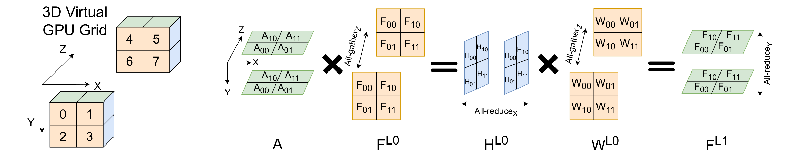
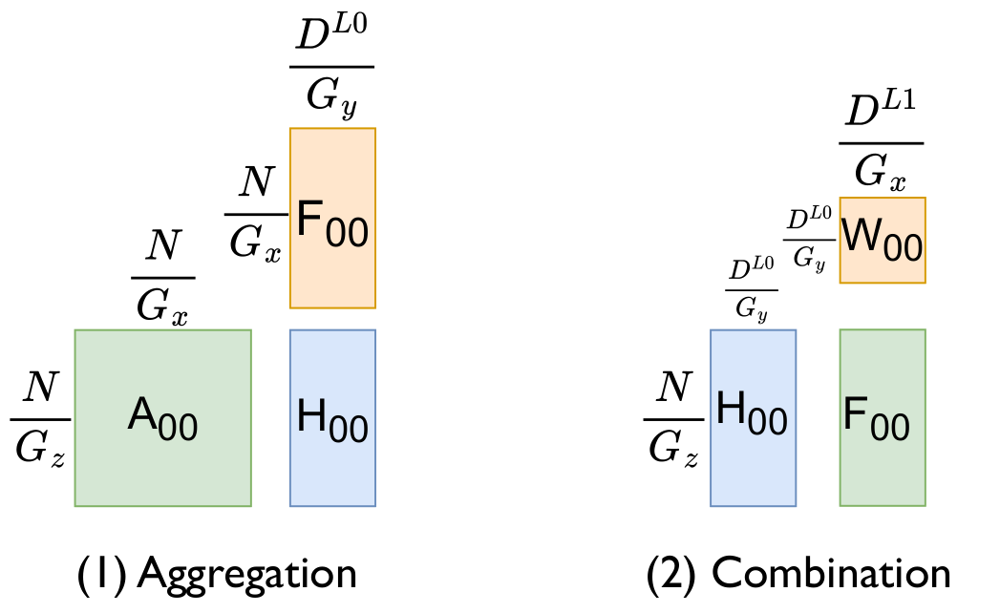
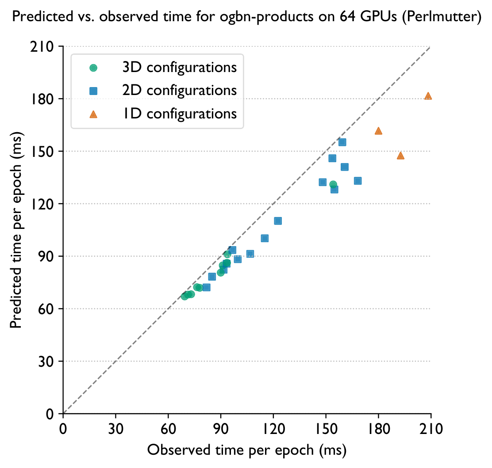
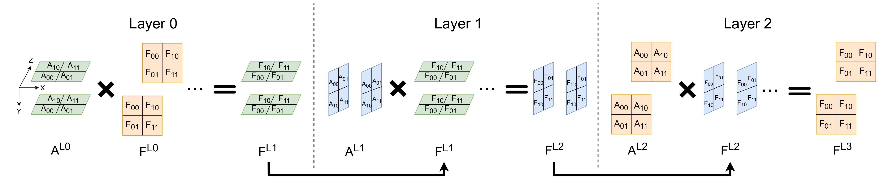
Making 3D Parallelism Fast
Double permutation for load balancing
Uneven sparsity creates computational stragglers. Rather than an expensive graph partitioner (which must re-partition per GPU count), Plexus applies distinct row and column permutations as a one-time preprocessing step — disrupting tightly-coupled communities and driving non-zeros to a near-perfect distribution.
| Permutation method | Max / Mean non-zeros (8×8 shards) |
|---|---|
| Original | 7.70 |
| Single permutation | 3.24 |
| Double permutation (this work) | 1.001 |
europe_osm dataset. Double permutation achieves near-perfect balance at the cost of storing two adjacency shards — a reasonable trade-off given GCNs typically use only 2–4 layers.
Blocked aggregation & dense-GEMM tuning
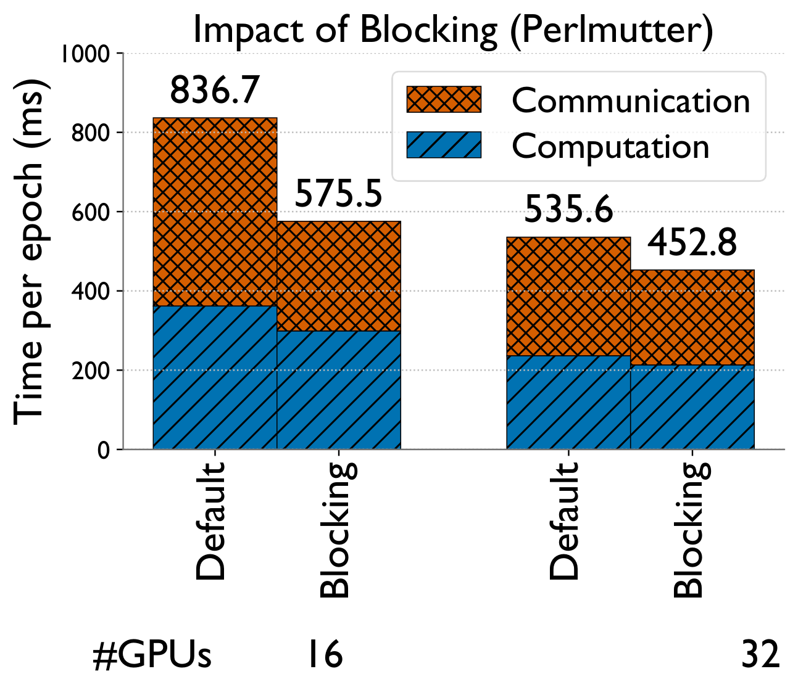
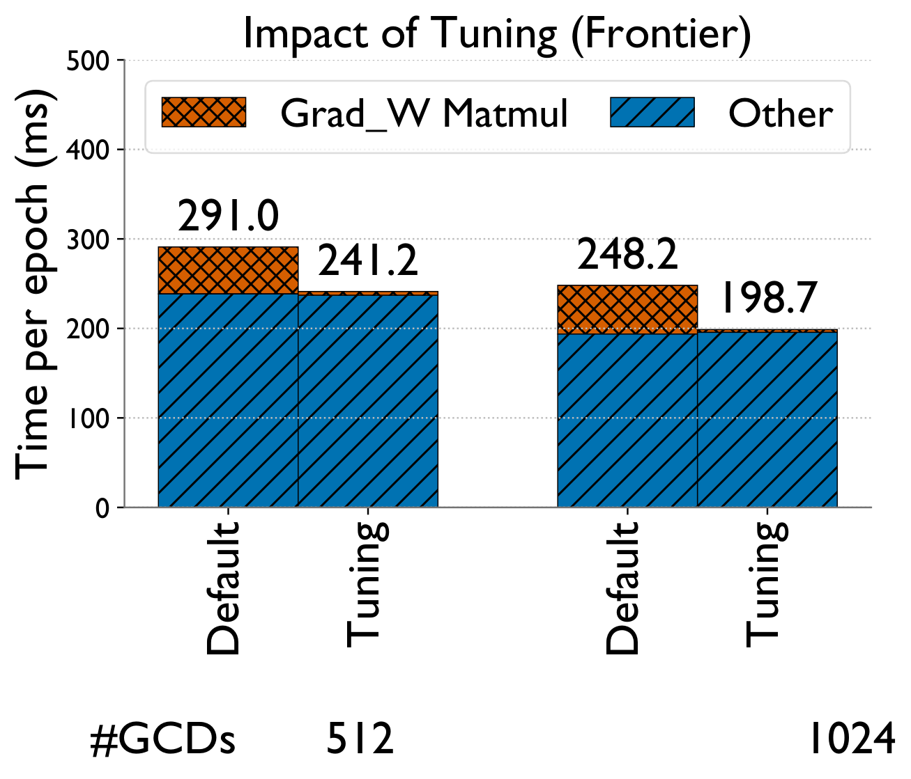
A parallel data loader shards data into 2D files offline so each GPU loads only what it needs. For ogbn-papers100M on 64 GPUs, CPU memory dropped from 146 GB → 9 GB and load time from 139s → 7s.
Six Graphs, up to 1.6 Billion Edges
| Dataset | Nodes | Edges | Non-zeros | Features | Classes |
|---|---|---|---|---|---|
| 232,965 | 57.3M | 114.8M | 602 | 41 | |
| ogbn-products | 2.45M | 61.9M | 126.2M | 100 | 47 |
| Isolate-3-8M | 8.75M | 654.6M | 1.32B | 128 | 32 |
| products-14M | 14.25M | 115.4M | 245.0M | 128 | 32 |
| europe_osm | 50.91M | 54.1M | 159.0M | 128 | 32 |
| ogbn-papers100M | 111.06M | 1.62B | 1.73B | 100 | 172 |
A 3-layer GCN with hidden dimension 128. Plexus is validated against a serial PyTorch Geometric baseline for correctness.
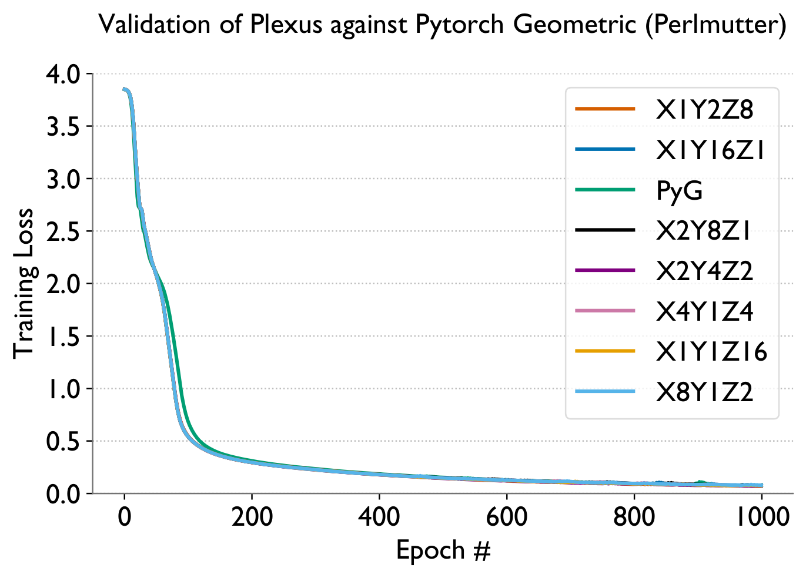
Scaling & Speedups
vs. state-of-the-art frameworks
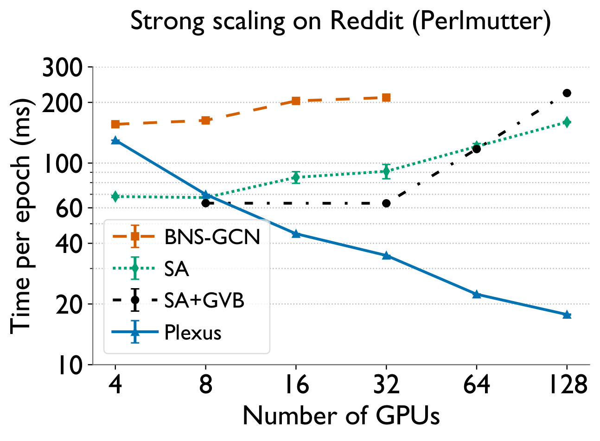
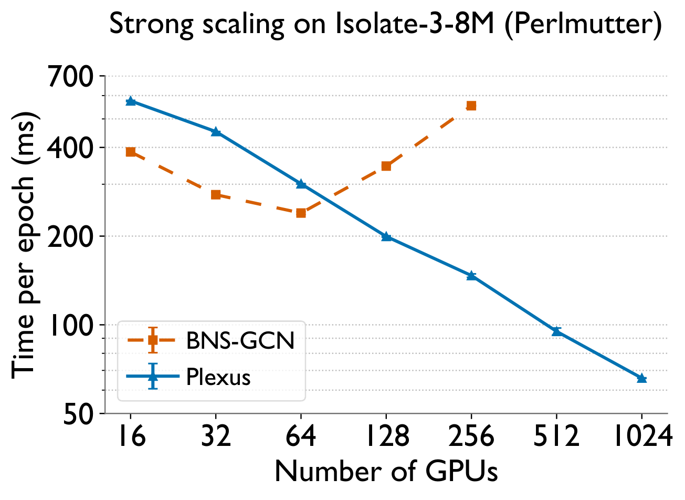
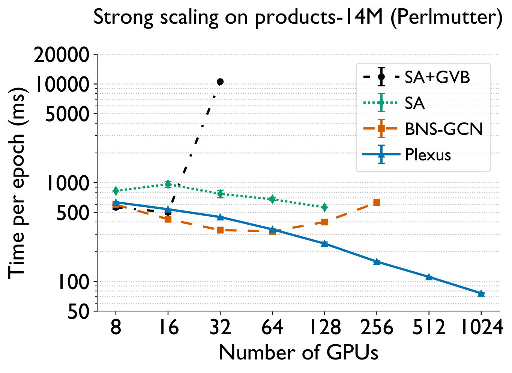
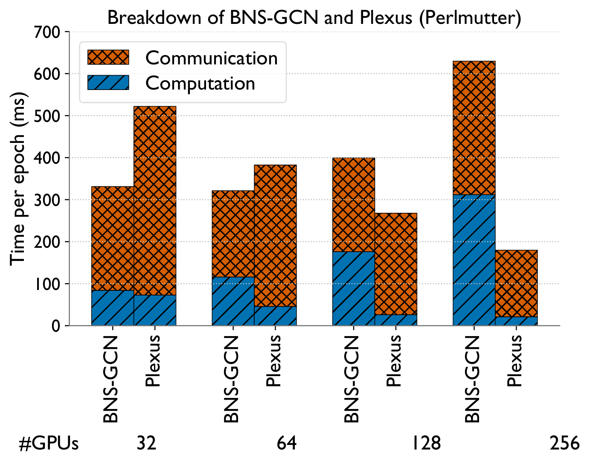
Strong scaling of Plexus to 2048 GPUs
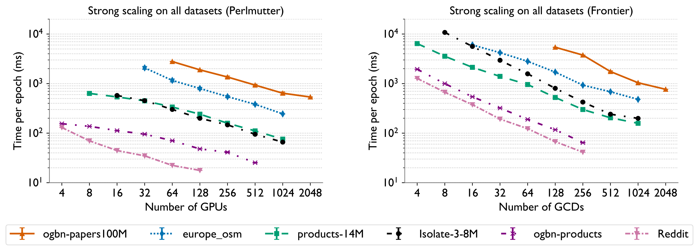
Bottom line
Full-graph GNN training has long been considered impractical to scale, forcing reliance on lossy sampling. Plexus shows that a 3D tensor-parallel approach — with double-permutation load balancing and a configuration-selecting performance model — makes exact, full-graph training both practical and fast, scaling billion-edge graphs to 2048 GPUs with 2.3–12.5× speedups over prior state of the art, all without a graph partitioner.
BibTeX
@inproceedings{ranjan2025plexus,
title = {Plexus: Taming Billion-edge Graphs with 3D Parallel
Full-graph GNN Training},
author = {Ranjan, Aditya K. and Singh, Siddharth and
Wei, Cunyang and Bhatele, Abhinav},
booktitle = {Proceedings of the International Conference for High
Performance Computing, Networking, Storage and
Analysis (SC '25)},
year = {2025},
doi = {10.1145/3712285.3759890}
}